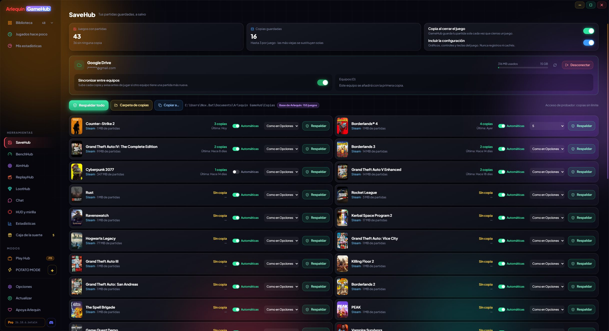

Tes sauvegardes, toujours en sécurité
SaveHub est la partie de GameHub qui veille sur tes parties : il sauvegarde chaque partie quand tu fermes le jeu et te permet de la récupérer en un clic, sur ton PC ou depuis ton propre cloud.

Copies automatiques
Chaque fois que tu fermes un jeu, GameHub sauvegarde ta partie. Pas besoin d’y penser.
Quand tu fermes un jeu, GameHub fait une copie compressée de ses sauvegardes dans le dossier de ton choix (idéalement sur un autre disque ou dans un dossier que tu as déjà dans le cloud). Il peut aussi sauvegarder les réglages du jeu (graphismes, commandes et touches) et les sauvegardes que certains jeux gardent dans le registre de Windows.
Il ne sauvegarde jamais les journaux ni les caches (par exemple les caches de shaders que génèrent beaucoup de jeux) : seulement l’important.
Pour les jeux que tu laisses ouverts des heures (MMO, survie…), avec ArlequinPro il peut aussi sauvegarder pendant la session toutes les 15, 30 ou 60 minutes.
Chaque jeu a son propre interrupteur « Automatique » et chaque dossier de sauvegarde son « Copier ». Si les sauvegardes d’un jeu dépassent 250 Mo, il te prévient et tu décides si tu les sauvegardes. Et tu peux épingler une copie pour qu’elle ne soit jamais supprimée.
Comment l’utiliser
- Ça marche tout seul : il n’y a rien à configurer.
- « Sauvegarder maintenant » sur la fiche du jeu fait une copie tout de suite.
- Dans SaveHub, « Tout sauvegarder » sauvegarde tous tes jeux.
Protection contre les sauvegardes abîmées
Si une copie est ratée, les bonnes ne sont pas perdues.
Si une copie automatique est bien plus petite que la précédente (par exemple parce que le jeu s’est mal fermé ou que la sauvegarde s’est corrompue), GameHub ne supprime pas les bonnes copies que tu avais déjà : il les garde en plus de la nouvelle.
Il garde plusieurs copies par jeu (3 avec ArlequinFree ; avec ArlequinPro, 5 par défaut et jusqu’à 10 ou illimité) : quand tu dépasses la limite, la plus ancienne est supprimée.
Comment l’utiliser
- C’est activé par défaut. Tu peux le changer dans Options → SaveHub.
- GameHub remarque si le jeu s’est mal fermé (blocage ou plantage) : cette copie est marquée, la précédente est épinglée pour pouvoir y revenir et, à la fermeture du jeu, il te demande si ta sauvegarde va bien ; sinon, il restaure la précédente.
- SaveHub te prévient des jeux joués ce mois-ci sans sauvegarde de ta dernière partie, avec « Sauvegarder maintenant ».
Restaure et emporte tes copies
Reviens à n’importe quelle copie en un clic, ou emporte-les sur une clé USB.
Sur la fiche de chaque jeu, tu vois ses copies (quand elles ont été faites et pourquoi : à la fermeture du jeu, à la main…) et tu peux restaurer n’importe laquelle. Avant de restaurer, GameHub garde ce que tu as maintenant, au cas où tu te tromperais.
Avec « Copier vers… », tu emportes toutes tes copies, la dernière de chaque jeu, celles des jeux sans launcher ou celles d’un jeu précis vers un autre dossier ou une clé USB.
Si quelque chose échoue en pleine restauration, GameHub l’annule et laisse tes sauvegardes comme elles étaient.
Avant de restaurer, GameHub vérifie que la copie est complète : si elle est abîmée, il ne touche à rien.
Comment l’utiliser
- Fiche du jeu → Parties sauvegardées → Restaurer.
- SaveHub → « Copier vers… ».
Emplacements de sauvegarde
Plusieurs sauvegardes dans les jeux qui n’en permettent qu’une. Avec ArlequinPro.
Certains jeux n’ont qu’une seule sauvegarde : si tu veux recommencer ou laisser quelqu’un d’autre jouer sur ton PC, tu perds la tienne. Avec les emplacements, tu as jusqu’à 10 sauvegardes par jeu et tu passes de l’une à l’autre en un clic.
Un nouvel emplacement peut partir de zéro ou d’une copie de la sauvegarde que tu utilises. Au changement, GameHub range d’abord la sauvegarde actuelle dans son emplacement, vérifie que tout va bien et, si quelque chose échoue, laisse tout comme avant. Les réglages du jeu ne changent pas.
Avec ton cloud connecté, les emplacements y sont aussi enregistrés et tu les as sur tous tes PC.
Comment l’utiliser
- Fiche du jeu → Parties sauvegardées → Emplacements de sauvegarde.
- Jeu fermé : clique sur « Emplacement 2 » et choisis comment il commence.
Tes sauvegardes dans ton propre cloud
Connecte ton Google Drive, OneDrive ou Dropbox et emporte tes sauvegardes sur un autre PC.
Chaque copie est envoyée dans un dossier GameHub de ton cloud : le reste de tes fichiers n’est pas touché. Quand tu ramènes une copie sur un autre PC, GameHub l’adapte à ce PC même si ton utilisateur Windows a un autre nom ou si tes jeux sont sur un autre disque.
Avec ArlequinFree, tes copies sont envoyées dans ton cloud depuis 1 PC (si tu changes de PC, tu peux passer au nouveau une fois tous les 30 jours) et depuis n’importe quel PC tu vois ce qu’il y a dans le cloud et tu restaures une copie à la main. Avec ArlequinPro, tes sauvegardes se synchronisent toutes seules sur tous tes PC et GameHub te prévient si un autre a une sauvegarde plus récente.
Le cloud est à toi : Arlequin ne garde tes sauvegardes sur aucun serveur à lui. Tu te connectes sur la page officielle de chaque service, et GameHub ne voit jamais ton mot de passe.
Comment l’utiliser
- Dans SaveHub, clique sur Google Drive, OneDrive ou Dropbox et connecte-toi.
- À partir de là, chaque copie est envoyée toute seule.
- Deux PC qui envoient en même temps ne s’écrasent plus, et si le cloud est plein ou la session a expiré, il te le dit clairement.
Sait où chaque jeu sauvegarde
Et ce qu’il ne sait pas, il l’apprend pendant que tu joues.
Chaque jeu range ses sauvegardes à un endroit différent (Documents, AppData, le dossier du jeu, le registre…). GameHub le sait grâce à ce que les boutiques gardent sur ton PC (par exemple les règles du cloud de Steam) et à la base de données de la communauté.
S’il ne sait pas, il observe quels fichiers le jeu écrit pendant que tu joues et apprend le dossier des sauvegardes. Il détecte aussi les dossiers partagés par plusieurs jeux (comme celui de Call of Duty) pour que les sauvegardes ne se mélangent pas. Et tu peux toujours ajouter un dossier à la main.
Il trouve plus de sauvegardes grâce au moteur du jeu (Unity, Unreal, Ren'Py, RPG Maker, GameMaker, Godot) et à la boutique (cloud GOG, Xbox / Game Pass et Ubisoft Connect), comprend les jeux qui se lancent depuis leur propre launcher (comme GTA IV) et ne confond pas les dossiers d’autres programmes, ni les dossiers partagés de Rockstar, avec des sauvegardes. La fiche du jeu te dit d’où vient chaque dossier.
Si un jeu n'a pas de chemin connu, GameHub cherche son dossier par le nom du jeu et par celui de son dossier d'installation aux endroits habituels (My Games, Documents, Saved Games et AppData, aussi dans le dossier de l'éditeur), avec ses réglages. Il ne prend ni les dossiers d'autres programmes ni ceux qui ne contiennent que des rapports de plantage ou des caches.
Comment l’utiliser
- Fiche du jeu → Parties sauvegardées → « Ajouter un dossier ».
À ton goût
Tout SaveHub se règle dans Options → SaveHub.
- Dossier des copies (et l’ouvrir).
- Copie à la fermeture du jeu, réglages compris.
- Protection contre les sauvegardes abîmées.
- Copies gardées par jeu, et copie pendant le jeu.
- Compression : rapide, normale ou maximale (prend moins de place, un peu plus long).
- « Ne jamais sauvegarder » : fichiers ou dossiers que tu ne veux pas dans tes copies (par exemple
*.mp4ouScreenshots).
Comment l’utiliser
- Options → SaveHub.
Tes sauvegardes en sécurité dès aujourd’hui
⬇ Téléchargement direct 🛍️ Télécharger sur le Microsoft StoreWindows 10 et 11 (64 bits) · Gratuit · Se met à jour tout seul